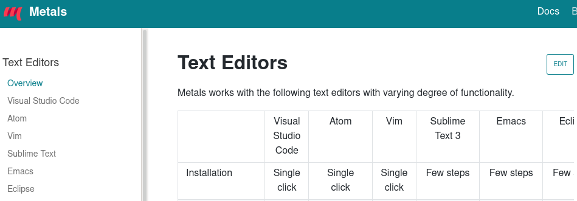
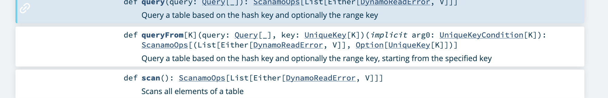
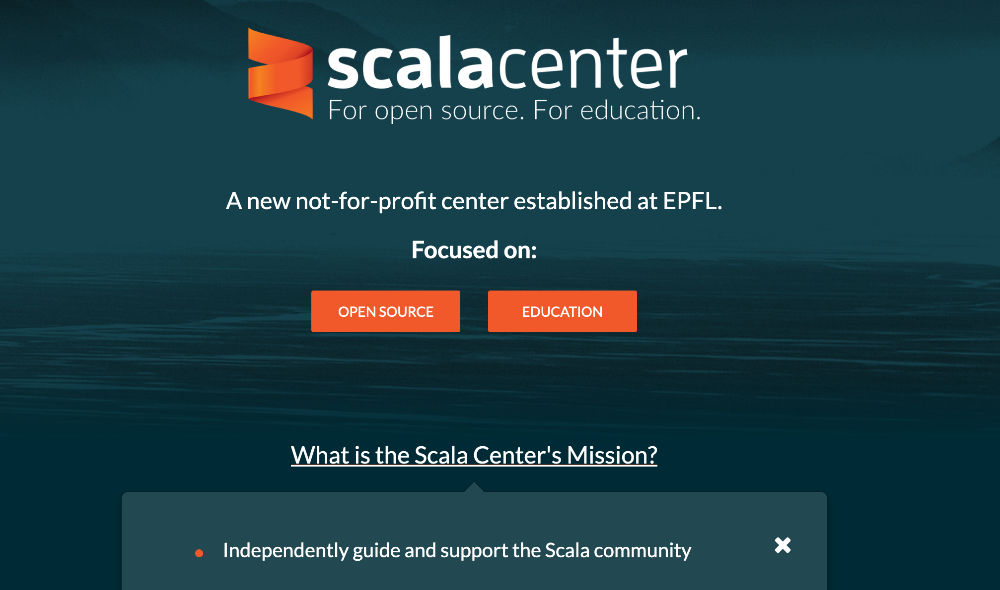
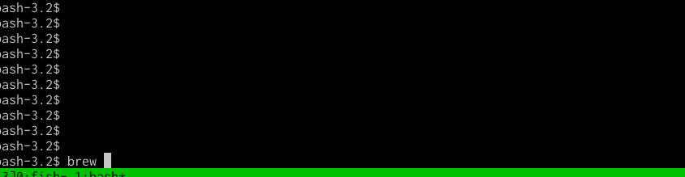
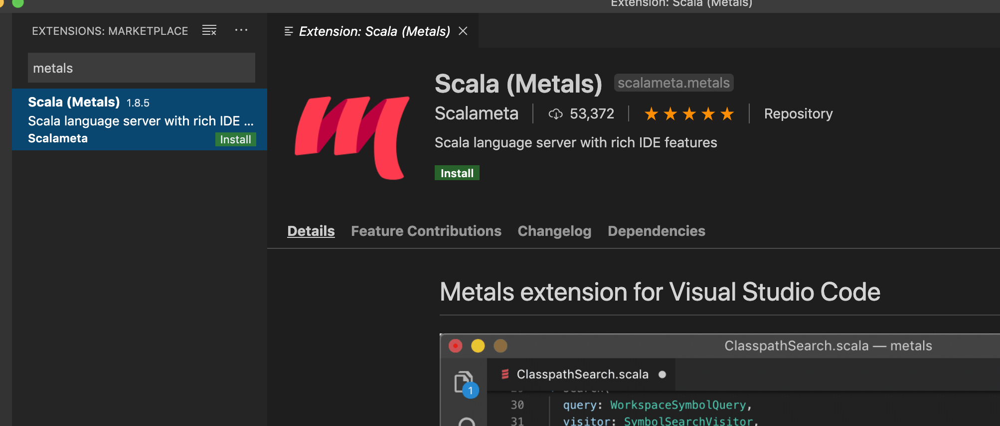

Scala Metals
Paul Roberts
Created: 2020-03-31 Tue 14:56
1 What is Metals?
1.1 An IDE for Scala
but you need to bring your own editor
1.2 An implmentation of LSP for Scala
[L]anguage [S]erver [P]rotocol
An open standard, which is implemented by many different editors.
The canonical implementation is probably VSCode.

1.3 Officially supported Editors

1.4 Why an IDE?
1.4.1 Real Programmers…

1.4.2 Scala can be simple, but also complicated
object Hello {
def main(args: Array[String]): Unit = println("Hello World")
}
1.4.3 The compiler is working hard for you
$ scalac -Xshow-phases
phase name id description
---------- -- -----------
parser 1 parse source into ASTs, perform simple desugaring
namer 2 resolve names, attach symbols to named trees
packageobjects 3 load package objects
typer 4 the meat and potatoes: type the trees
patmat 5 translate match expressions
[ . . . ]
cleanup 21 platform-specific cleanups, generate reflective calls
delambdafy 22 remove lambdas
jvm 23 generate JVM bytecode
terminal 24 the last phase during a compilation run
1.4.4 What now?

1.4.5 Just looking at the code is not enough
- Type inference
- Implicit resolution
- APIs for external libraries
- Your class/object/trait could be implemented in any file
1.4.6 Let's ask the compiler to help
2 Metals built on existing tools
- Bloop
- compile server
- ScalaMeta
- model for representing Scala code
- Scalafmt
- code reformatting
- SBT plugin
- or other build tool, provides information about your project
3 Built and supported by the Scala Center

4 Tour through Metals
4.1 Installation on VSCode
$ brew cask install visual-studio-code

4.1.1 And then it's just a plugin

4.2 Open a Scala project
which is based on one of the supported build tools, e.g. SBT
4.3 Metals Sidebar
- Semantic tree-view of the codebase
- Run Doctor for debugging
4.4 Example of features
- Inline errors (diagnostics)
- Find definition
- Documentation on symbol
- Rename a symbol / refactoring
- Worksheets
4.5 Completion
Some quite advanced completions:
- exhaustive matches
- replace string literals with string interpolations
5 Usage with other editors
5.1 Installing with Coursier
./coursier bootstrap \
--java-opt -Xss4m \
--java-opt -Xms100m \
--java-opt -Dmetals.client=emacs \
org.scalameta:metals_2.12:0.8.3 \
-r bintray:scalacenter/releases \
-r sonatype:snapshots \
-o /usr/local/bin/metals-emacs -f
5.2 Emacs
lsp-mode- flashy in-your-face IDE-like experience
eglot- subtle, configurable, inconvenient
6 Limitiations
- Still some features missing from IntelliJ
- Actively being developed so still changing / evolving